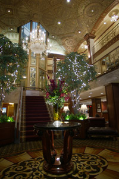

Location
Conference, Workshops, and Accomodations
Biltmore Hotel
Providence, Rhode Island
A quick hour drive from Boston, the Providence Biltmore offers personal attention and comfort appealing to both leisure and business travelers. A welcoming alternative to more commercial branded hotels, the Biltmore provides an atmosphere to that of a grand European hotel. In a city graced by historic charm, the Providence Biltmore is an authentic Providence tradition.
In the heart of downtown, steps from the City's most exclusive shopping and dining areas and conveniently located near the Rhode Island Convention Center, Providence Place Mall, Waterplace Park, Rhode Island School of Design, Brown University, and major corporations.
Reserve your room now for the discounted rate of $117/night online or call 1-800-294-7709 and request the "ARTIFACT Conference Room Block."